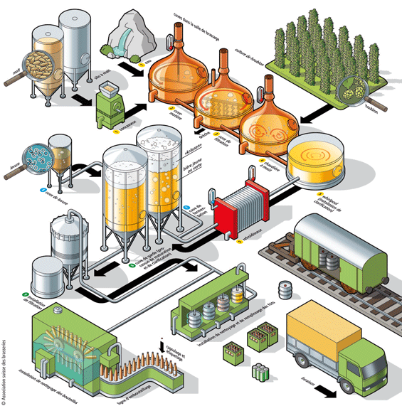

A travers cette page, il s'agit de présenter de manière non-exhaustive cette fameuse boisson alcoolisée sous différents
angles.
Définition
L'un des première définition légales de la bière date de 1516 avec le "Reinheitsgebot". Le fameux edit de pureté
Baverois stipule que la bière doit être composée uniquement des ingrédients suivants :
orge
houblon
eau.
La levure à cette époque n'étant pas connu, elle ne figure pas dans la liste. Ces éléments sont les composants primaires
pour fabriquer une bière bien que d'autres éléments peuvent entrer dans la composition.
Processus de fabrication
La maltage
Le principe du maltage consiste à reproduire le développement naturel du grain d'orge : la germination; afin qu'il
produise certaines enzymes nécessaires à la transformation de l'amidon en sucres (saccharification), et donc,
à la fabrication d'alcool lors de la fermentation. Il peut être précédé ou suivi d'une torréfaction.
La saccharification
La saccharification consiste à transformer les sucres complexes (amidon) contenus dans le grain en sucres simples,
grâce à l'action des enzymes du malt, activées par chauffage. On concasse grossièrement le malt avant de l'hydrater
avec de l'eau ce qui forme la « maische ». Ce mélange va ensuite être chauffé, il existe trois principales techniques :
la décoction : on retire une partie du brassin que l'on porte à ébullition avant de l'incorporer à la maische,
on appelle cela une « trempe ». Plusieurs trempes sont pratiquées afin d'augmenter graduellement la température.
Cette technique est utilisée pour la fermentation basse.
l'infusion par palier : on chauffe l'eau avec la maische, ou on incorpore à intervalle régulier de l'eau très
chaude. C'est une méthode très flexible et précise.
l'infusion simple : on chauffe de l'eau que l'on incorpore au malt.
On extrait ensuite le « moût primitif » de la maische en filtrant et en percolant avec de l'eau chaude (comme
pour du café) dans une cuve spéciale appelée « cuve filtre ». Le résidu solide s'appelle la « drêche » et est
recyclé pour nourrir le bétail.
L'aromatisation ou houblonnage
C'est à cette étape que l'on incorpore le houblon et parfois des épices. Le mélange est porté à ébullition. L'ébullition
est propice à l'apparition des saveurs amères. L'amertume provient essentiellement d'une résine jaunâtre produite par les
cônes femelles du houblon : la lupuline. Cette étape est réalisée durant la « cuisson » du moût. L'ébullition a pour
principal intérêt de détruire les enzymes dont le rôle est alors terminé.
La fermentation
La fermentation est une étape cruciale dans la fabrication de la bière. Cette fermentation se décompose en deux stades :
la fermentation principale, qui dure de 3 à 10 jours à une température de 18 à 26 °C et la fermentation secondaire
(haute ou basse), dépendant des levures utilisées et de la température de fermentation.
La fermentation est l'étape à laquelle on ajoute des levures afin de produire l'alcool. Le « levain » est la quantité de
levure nécessaire pour ensemencer tout ou partie du moût destiné à la fermentation. Il existe trois principales méthodes
de fermentation :
la fermentation basse : elle se déroule à une température comprise entre 5 °C et 14 °C. L'une des levures
utilisée est la Saccharomyces uvarum. Cette fermentation dure une dizaine de jours. À la fin de la fermentation,
les levures coulent au fond de la cuve, d'où le nom de fermentation basse. Il s'agit d'une fermentation caractéristique
des lagers.
la fermentation haute : elle se déroule à une température comprise entre 15 °C et 20 °C. L'une des levures utilisée est
la Saccharomyces cerevisiae. Cette fermentation dure de 4 à 8 jours. Au contraire de la fermentation basse, les levures
migrent à la surface du brassin, d'où son nom. Il s'agit d'une fermentation caractéristique des Ales.
la fermentation spontanée : elle se déroule sans ajout de levures cultivées, seulement par contamination « sauvage » de
levures et bactéries en suspension dans l'air ambiant. Les levures retrouvées sont la Brettanomyces bruxellensis et la
Brettanomyces lambicus qui sont endémiques à la vallée de la Senne (région de Bruxelles) et de la région de Pajottenland.
Il s'agit d'une fermentation caractéristique des lambics.
La fermentation est généralement (sauf pour les blanches) suivie par une « clarification » qui permet de retirer les levures
et les impuretés. Outre la garde qui permet une décantation des particules de levures, protéines coagulées et résidus de
houblon, certaines brasseries utilisent des filtres micrométriques à diatomées ou encore une centrifugeuse. Il arrive
d'ailleurs que la bière subisse une pasteurisation afin de s'assurer d'un produit aseptisé.
Enfin, beaucoup plus rare, il existe également une fermentation mixte.
